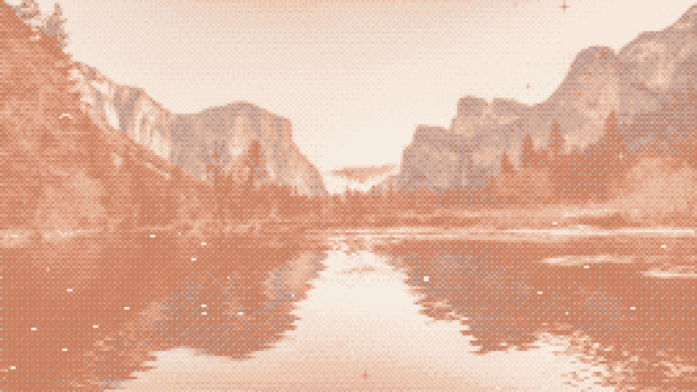
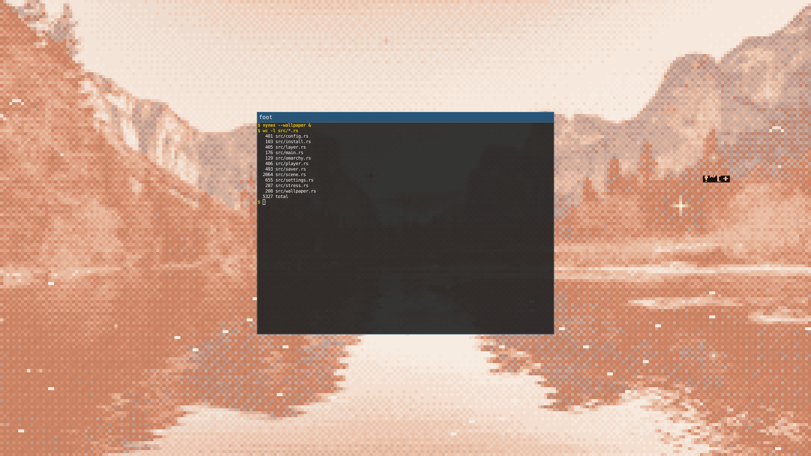

Before and after
Drag across the picture
Left of the line is the photo. Right of it is what nynex draws: the same scene on a grid of big pixels, in 16 colours with a fine dither, warmed toward cream and clay.


photonynexUse the arrow keys after clicking the picture to move the line.
Looks
One photo, many moods
Every look is a handful of sliders in the settings app. Each landscape can share the common look or have its own.


Where it runs
Screensaver, wallpaper, or just a window
Windows 10 and 11
- Screensaver: pick a wait time and click Use as my screensaver. No trip to Windows' Screen Saver Settings needed.
- Wallpaper: plays behind the desktop icons on every monitor, and pauses on a screen covered by a maximised window.
- Start with Windows, play in a window, or full screen. Left and Right arrows step through your landscapes.

Omarchy and other Wayland desktops
- Screensaver: hooks into Omarchy's idle screensaver, keeping Omarchy's lock timer and window rules working.
- Wallpaper: a layer-shell surface on every monitor, under your windows. It only draws when the compositor asks for a frame.
- Works on Hyprland, Sway, niri and other wlroots-style compositors.

How light it is
No graphics card, no runtime, one file
nynex is a single program of about 5,000 lines of Rust. Every frame is drawn on the CPU, which means it behaves the same in a VM, over remote desktop or on a laptop with flaky drivers. It is built to idle politely.
| Version | Speed | CPU per frame | Memory, typical | Memory, peak |
|---|---|---|---|---|
Python prototype (fmscape.py) | 18 fps flat out | 55 ms | 88–126 MB | 260 MB |
| nynex 0.9.2 (Rust) | 30 fps | 12.6 ms | 132 MB | 232 MB |
| nynex, this version | 30 fps | 12.2 ms | 76 MB | 218 MB |
Memory is the resident size Linux reports (RSS). Windows Task Manager shows a different number by default (the private working set, which leaves out shared libraries and memory Windows has trimmed), so it reads much lower for the same program. Full method and raw numbers: BENCHMARKS.md.
How it works
Five steps, thirty times a second
Shrink
Crop to your screen's shape and shrink to a grid of big pixels: about 41,000 cells instead of 2 million pixels.
Understand
Find the sky with a paint-bucket flood fill, find a lake by checking whether the bottom half mirrors the top, and pick the 16 colours that best represent the picture.
Animate
Slide the water rows on slow waves, drift clouds made of noise, flap the birds, twinkle the stars.
Stylize
Snap each cell to the palette through a 32 KB lookup table, with a 1990s ordered dither.
Show
Scale up with hard edges on four CPU cores, and send the screen only the parts that changed.
Install
Two minutes, no admin rights on Windows
Windows
- Download
nynex.exefrom the latest release and open it. If Windows warns that the file isn't signed, click More info, then Run anyway. - Add your landscape photos and tune the look. The preview updates as you go.
- Pick a wait time and click Use as my screensaver, or start it as your wallpaper.
Omarchy
- Run the installer from the omarchy-pixelbook-go repo. It puts
nynexon your PATH, adds it to the launcher and hooks the idle screensaver. - Open nynex from the launcher, add photos, and choose My screensaver: nynex.
- Or by hand, on any Wayland desktop:
nynex --wallpaper # live wallpaper nynex --screensaver # one full-screen window nynex --render in.jpg out.png # one frame to a file